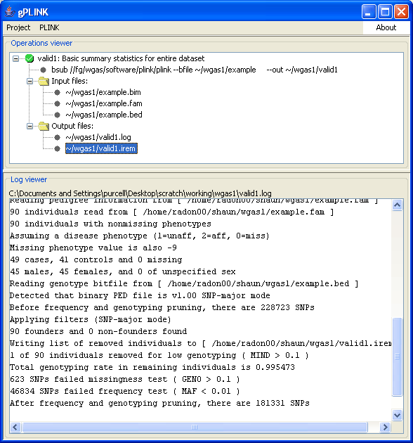

|  |
Browsing the resultsAs mentioned, all this analysis has done is to count the number of individuals and SNPs, and apply the default filters (based on allele frequency and genotyping rate). In the LOG file, you can also see that 1 individual has been excluded based on the genotyping rate filter, and that this individual has been recorded in the file valid1.irem. You can also see this file in the top tree list of output files.Previous | Next |